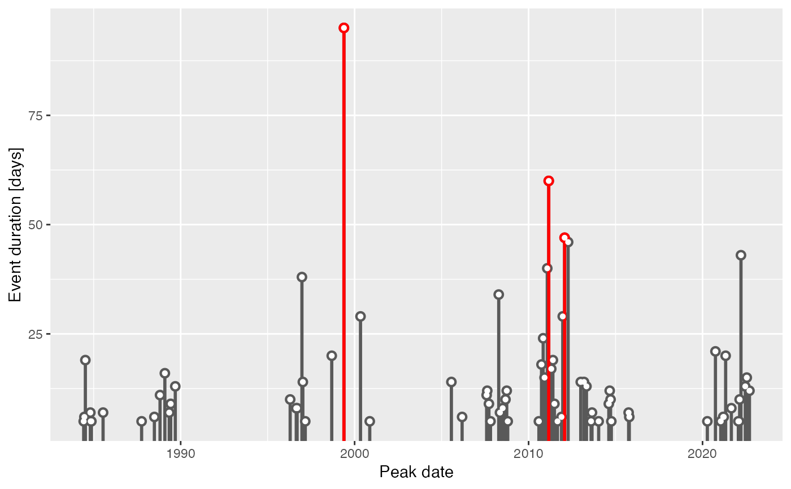

The function will return a graph of the intensity of the selected
metric along the *y*-axis versus a time variable along the *x*-axis.
The number of top events (n) from the chosen metric may be highlighted
in a brighter colour with the aesthetic value colour_n.
This function differs in use from lolli_plot
in that it must be created as a ggplot2 'geom' object. The benefit of this being
that one may add additional information layer by layer to the figure as
geoms as necessary.
geom_lolli( mapping = NULL, data = NULL, ..., n = 0, na.rm = FALSE, show.legend = NA, inherit.aes = TRUE )
Arguments
| mapping | Set of aesthetic mappings created by |
|---|---|
| data | The data to be displayed in this layer. There are three options:
|
| ... | other arguments passed on to |
| n | The number of top events to highlight as based on the value provided
to |
| na.rm | If |
| show.legend | Logical. Should this layer be included in the legends? |
| inherit.aes | If |
Aesthetics
geom_lolli understands the following aesthetics (required aesthetics
are in bold):
xyalphacolorlinetypesizeshapestrokefillcolour_nWhile this value may be used as an aesthetic, it works better as a parameter for this function because it is set to use discrete values. One may provide continuous values tocolour_nbut remember that one may not provide multiple continuous or discrete scales to a single ggplot2 object. Therefore, if one provides a continuous value toaes(colour), the values supplied tocolour_nmust be discrete.ggplot2will attempt to do this automatically.
See also
lolli_plot for a non-geom based lolliplot function.
Examples
ts <- ts2clm(sst_WA, climatologyPeriod = c("1983-01-01", "2012-12-31")) res <- detect_event(ts) mhw <- res$event library(ggplot2) # Height of lollis represent event durations and their colours # are mapped to the events' cumulative intensity: ggplot(mhw, aes(x = date_peak, y = duration)) + geom_lolli(aes(colour = intensity_cumulative)) + scale_color_distiller(palette = "Spectral", name = "Cumulative \nintensity") + xlab("Date") + ylab("Event duration [days]")# Height of lollis represent event durations and the top three (longest) # lollis are highlighted in red: ggplot(mhw, aes(x = date_peak, y = duration)) + geom_lolli(n = 3, colour_n = "red") + scale_color_distiller(palette = "Spectral") + xlab("Peak date") + ylab("Event duration [days]")# Because this is a proper geom, any number of ill-advised things # may be done with it: ggplot(mhw, aes(x = event_no, y = intensity_max)) + geom_lolli(shape = 5, aes(colour = rate_onset), linetype = "dotted") + scale_color_distiller(palette = "RdYlGn", name = "Rate \nonset") + xlab("Event number") + ylab("Max intensity [degree C]")